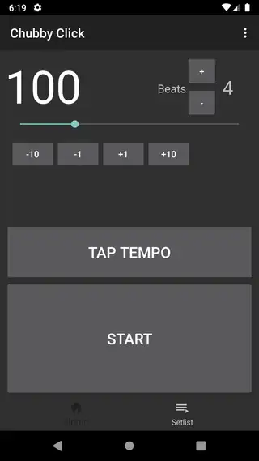

NOTE: The app is no longer developed. Chubby Click is a metronome designed for the musician that needs to easily manage a setlist of songs. The app features three sections: * A conventional metronome with tap tempo * A Setlist where songs can be added and sorted, and where the click for each song ca
SHA-256: f5e01afc74656ae3d18973b274abacf4efb63b794062785542474d874b7fe383

امسح الكود لفتح صفحة التطبيق
Scan to open this app page
لو كنز مش متثبت عندك: نزّل متجر كنز.
Not installed? Get the Kanz store.